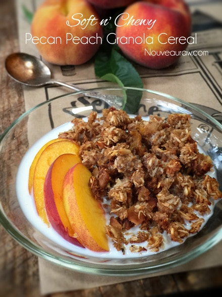
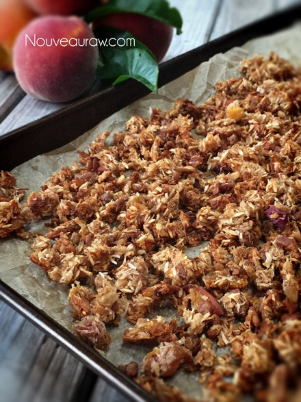

Soft n’ Chewy Pecan Peach Granola Cereal

~ raw, vegan, gluten-free ~
The whole goal behind this cereal was to create a soft and inviting granola for breakfast… Steering away from the traditional hard and crunchy style.
With that being said, all though this granola won’t last as long, shelf-wise as the traditional stuff. It’s a great way to break out of the rut of eating the same foods day in and day out… whether it be out of ease or necessity… it’s always good to mix up the nutritional makeup of the foods you eat.
As the chillier months approach, hot cereal is everyone’s go-to breakfast during this season, but if you eat a high or even an all raw diet, that can become a real challenge. There are many ways that you can “warm up” your foods.
Using “warming spices” is one way, as well as using your dehydrator to warm things just enough to take the chill off. In this dish, the flavor combination of oats, pecans, peaches, and nutmeg nestle me right into the comfort of Fall. Out come the flannel jammies, fuzzy socks, and extra quilts. Oh, how I love this time of year. The season of snuggling!
But will it bake?
Have you seen those Blendtec Youtube videos called, “Will it Blend“? If not, you must. The guy is crazy! Anyway, I got sidetracked there for a moment. More and more, I have people come to my site who don’t own dehydrators. Along with those who can’t handle some ingredients in their raw state. They are looking for whole food recipes that can be baked. I took this recipe and divided it in half, putting a tray in the dehydrator and the other half on a baking sheet.
Remember… my goal with this recipe is not to bake or dehydrate it to a dry and crunchy state. So regardless of what application I used, I pulled it out before the fresh peaches were dried out. I wanted to create an explosion of textures in my mouth. The chewy, semi-crunchy granola with the soft sweetness of the peach. The drying or baking process of the peaches really brings out their flavor, intensifying it somewhat. Enjoy and please share if you give this recipe a try.
Yields about 8-10 cups
- 2 cups raw, gluten-free oats, soaked
- 1 1/2 cups raw pecans, soaked
- 1 1/4 cups shredded coconut, unsweetened
- 2 1/4 cups diced fresh peaches
- 2 Tbsp cold-pressed raw coconut oil, melted
- 1/4 cup raw honey or equivalent
- 1/4 cup raw coconut crystals
- 2 tsp ground Ceylon cinnamon
- 1/2 tsp Himalayan pink salt
- 1/4 tsp ground nutmeg
- 1 tsp vanilla extract
Preparation:
- After soaking the pecans, drain and give them a quick rinse when you are ready to use them.
- The same goes for the oats, though they will take a bit to rinse. Place in a colander and as you run water over them, agitate with your fingers to speed up the rinse time. Then hand squeeze as much excess water from them as possible.
- In a large bowl combine; oats, pecans, coconut, and dried peaches. Set aside.
- If using dried peaches, soak them in enough water to cover for 10 minutes. This will rehydrate them, making it easier to dice.
- If using fresh peaches, dice into small cubed pieces.
- In a small bowl combine; honey, raw coconut crystals, cinnamon, nutmeg, and vanilla. Mix well and pour over the dry ingredients, mixing until everything is well coated. I used my hands for this process.
Dehydrating process:
- Spread out on the mesh sheets that come with the dehydrator and dry at 145 degrees for 1 hour, reduce to 115 degrees (F) and continue to dry for about 16-24 hours. After 10 hours, start checking in on the granola, testing the texture.
- Dry times will always vary depending on how much of the water you squeezed out of the oats. The climate that you live in will also be a determining factor.
- This granola is meant to be soft and chewy so be sure to remove it before it dries crunchy. Unless that is what you want.
- Store in an airtight glass container in the fridge for several weeks.
- To enjoy warm, place a single serving in a shallow bowl, along with some sort of milk. Slide into the dehydrator and warm at 115 degrees. Check after 15 minutes to see if it is warm enough.
- You can also pre-warm the bowl either in hot water or in the dehydrator to speed the process.
Baking process:
- Preheat the oven to 350 degrees (F).
- Line a baking sheet with parchment paper and spread the granola mix across the pan. This amount of batter will make 2 pans worth. Don’t pile it, spread it so it can have a chance to cook evenly.
- Bake for 15 minutes, remove from the oven and give it a good stir. Watch, so it doesn’t burn!
- Return to the oven and cook for another 15 minutes. Please watch the granola through the whole baking process since some ovens can cook hotter than others. Document the bake time for your next batch!
- Allow the granola to cool before storing. It will be soft and chewy, and that is the intent!
- Store in a mason jar in the fridge for 1-2 weeks.
- Serve with your favorite milk.
The Institute of Culinary Ingredients™
- Raw Coconut Crystals add a “brown sugar” flavor to a recipe. Read about it (here).
- What is raw cacao powder?
- Why do I specify Ceylon cinnamon? Click (here) to learn why.
- What is Himalayan pink salt and does it really matter? Click (here) to read more about it.
- Are oats gluten-free? Yes, read more about that (here).
- Are oats raw? Yes, they can be found. Click (here) to learn more.
- Do I need to soak and dehydrate oats? Not required but recommended. Click (here) to see why.
Culinary Explanations:
- Why do I start the dehydrator at 145 degrees (F)? Click (here) to learn the reason behind this.
- When working with fresh ingredients, it is important to taste test as you build a recipe. Learn why (here).
- Don’t own a dehydrator? Learn how to use your oven (here). I do however truly believe that it is a worthwhile investment. Click (here) to learn what I use.


© AmieSue.com